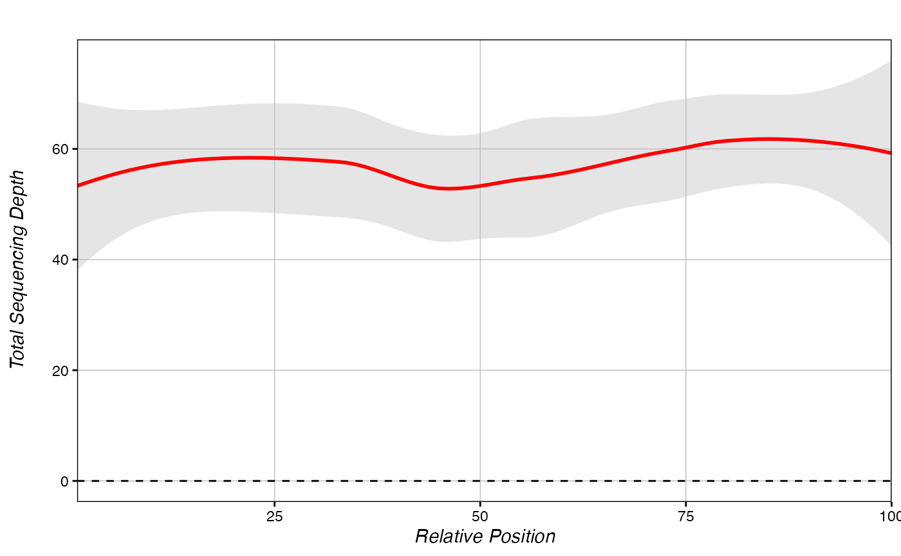
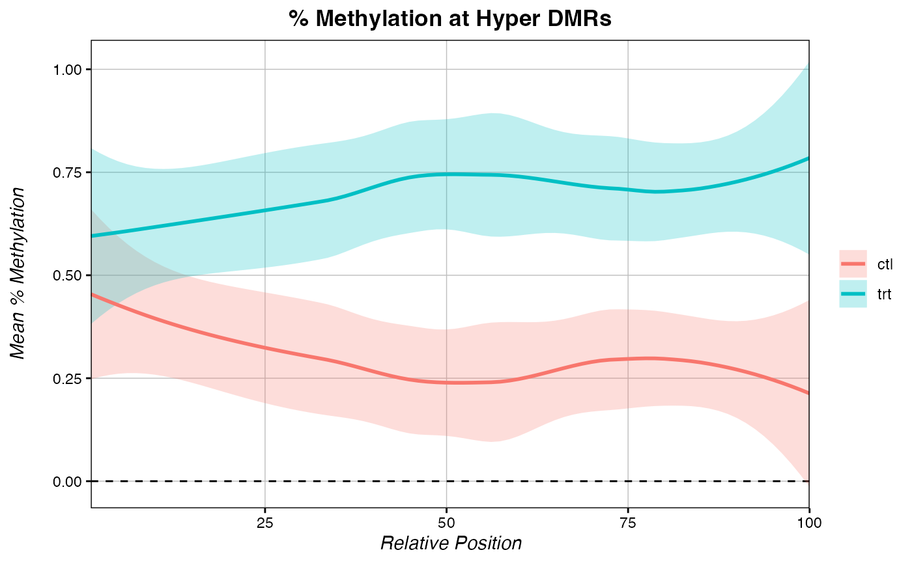

Manipulating Percent Methylation
Kathryn Lande
2024-08-13
Source:vignettes/Manipulating_Percent_Methylation.Rmd
Manipulating_Percent_Methylation.RmdWhile PCBS functions on eigenvector scores internally, users may wish to generate plots using less esoteric values, such as the mean percent methylation difference between conditions. Here we provide a brief tutorial for this type of analysis.
Generating a chromDict
chromDicts are lists of keyed data.tables that enable very fast computing times. chromDicts of eigenvector score are used internally by many PCBS functions. They can also be explicitly generated by users who wish to speed up iterative function calls. In order to easily manipulate our percent methylation values genome-wide, we can make a percent methylation chromDict object that holds the average percent methylation difference between two treatments for all filtered loci.
chromDictMethylDiff <- chromDictMeth(eigen, IDs = c("trt", "ctl"), filter_thresh = 50)Mean methylation over regions
Once the chromDictMeth object is generated, methylation at a region or over a set of regions can be computed very quickly. Get the methylation difference across one known DMR:
MethylDiff(chromDictMethylDiff, "chr3", "4920450", "4923267")
## [1] -0.5493768Or get the methylation difference across a set of regions:
# we need a data.frame of regions to check:
# any dataframe where the first three column are chrom, start, end, respectively.
regions <- data.frame(chr=c("chr3", "chr3", "chr1"),
s=c(4920450, 3961576, 301000),
e=c(4923267, 3963805, 303900))
regions <- MethyDiff_Set(chromDictMethylDiff, regions)
head(regions) # returns the input file with a "mean_methylDiff" column
## chr s e mean_methylDiff
## 1 chr3 4920450 4923267 -0.54937676
## 2 chr3 3961576 3963805 0.21200740
## 3 chr1 301000 303900 -0.02724904Metagenes - ∆ Methylation
Like the score_metagene() function, PCBS can also generate metagenes on percent methylation using a chromDictMeth object.
methylDiff_metagene(chromDictMethylDiff, regions)
Just like score-based metagenes, you can save the data from a methylDiff_metagene() function and overlay multiple metagenes on a single plot.
# Some hypomethylated sites:
hyper <- data.frame(c=c("chr1", "chr3"),
s=c(8650728, 3960576),
e=c(8652017, 3962805))
# Some hypermethylated sites:
hypo <- data.frame(c=c("chr3", "chr3", "chr3"),
s=c(4920450, 4140014, 1340221),
e=c(4923267, 4142951, 1342791))
metagene_hyper <- methylDiff_metagene(chromDictMethylDiff, hyper, return.data = T)
metagene_hypo <- methylDiff_metagene(chromDictMethylDiff, hypo, return.data = T)
multiple_metagenes(data_list = list(metagene_hyper, metagene_hypo), # list of raw data
set_names = c("Hyper DMRs", "Hypo DMRs"), # names for elements of the data_list list
title="Metagenes of DMR Regions", legend.title = F,
yaxis = "Mean Methylation Difference")
Metagenes - Other Values
More broadly, we can make a chromDict of essentially any value, and by extension, a metagene of essentially any value. The chromDict() function only needs a single column dataframe, where genomic loci are row.names. For example:
# we need a data.frame of regions to check:
head(getPCRanks(eigen, c("trt", "ctl")))
## PC_Score
## chr2:2505718 3.781088e-05
## chr2:1807326 4.573342e-04
## chr2:2490208 3.156102e-03
## chr2:5512828 -5.695585e-03
## chr3:1296629 2.822282e-03
## chr3:3212276 -6.044066e-03Normally, this function takes the PC score, but we can also feed it another value, such as total coverage:
# we need a data.frame of regions to check:
eigen$meanCounts <- rowMeans(eigen[which(grepl("nCpG", colnames(eigen)))]) # the column in our dict will be called "totalCounts"
eigen <- eigen %>% column_to_rownames("cpgID")
head(eigen[c(13)])
## meanCounts
## chr2:2505718 56.50000
## chr2:1807326 59.83333
## chr2:2490208 57.33333
## chr2:5512828 46.16667
## chr3:1296629 55.83333
## chr3:3212276 53.50000Then we can make a metagene of coverage:
# we need a data.frame of regions to check:
coverageDict <- chromDict(eigen[c(13)])
# metagenes on alternative values are made the same way, but the added "value" parameter must be specified.
methylDiff_metagene(coverageDict, hyper,
yaxis = "Total Sequencing Depth", # y-axis name is "Methylation Difference" automatically
value = colnames(coverageDict[[1]])[1]) # column name for the plotted value inside your dict
We can also make separate chromDicts for the treatment and control samples. This way, we can plot the mean methylation in young and old separately:
# matrix of percent methylation only:
eigen[which(grepl("PercMeth", colnames(eigen)))] -> eigen_meth
# take the mean of "trt" and "ctl" columns separately:
eigen$trt_mean <- rowMeans(eigen_meth[which(grepl("trt", colnames(eigen_meth)))])
eigen$ctl_mean <- rowMeans(eigen_meth[which(grepl("ctl", colnames(eigen_meth)))])
# make dicts for trt and ctl:
trt_Dict <- chromDict(eigen["trt_mean"])
ctl_Dict <- chromDict(eigen["ctl_mean"])
# make metagenes for each dict separately:
metagene_trt <- methylDiff_metagene(trt_Dict, hyper, return.data = T, value = "trt_mean")
metagene_ctl <- methylDiff_metagene(ctl_Dict, hyper, return.data = T, value = "ctl_mean")
# plot metagenes of % methylation at hypermeth sites in each condition separately:
multiple_metagenes(data_list = list(metagene_trt, metagene_ctl), # list of raw data
set_names = c("trt", "ctl"), # names for elements of the data_list list
title="% Methylation at Hyper DMRs", legend.title = F,
yaxis = "Mean % Methylation")